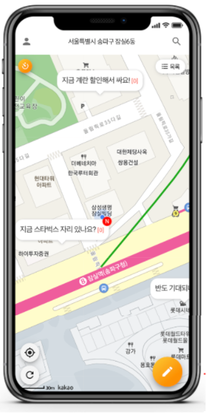

도란도란(2020.07 ~ 2020.11)
지도 위에서 주위 사람들과 소통할 수 있는
위치 기반 커뮤니티 서비스

기여
-
Vue.js 기반 프론트 페이지 구현
- Vue Style Guide를 참고한 팀 컨벤션 제정
- KakaoMap Api의 원활한 사용을 위한 Vue.js 플러그인 구현
- vue-router를 이용한 모달창 관리
- Git Flow, Github Kanban을 통한 프로젝트 관리
- 코드리뷰를 통한 코드 병합 관리
- Spring Boot 기반 API 설계 및 구현
-
인프라 환경 구축
- Nginx를 이용한 정적 자원 제공 및 캐싱
- Jenkins를 통한 무중단 CI/CD 환경 구축
기술 스택
- FrontEnd : JavaScript (ES6), Vue.js 2, Vuetify, Axios
- BackEnd : Java8, JUnit5, Spring Boot 2.3, Spring Data JPA, QueryDSL
- Infra : Maria DB, AWS EC2, Jenkins, Nginx, Git